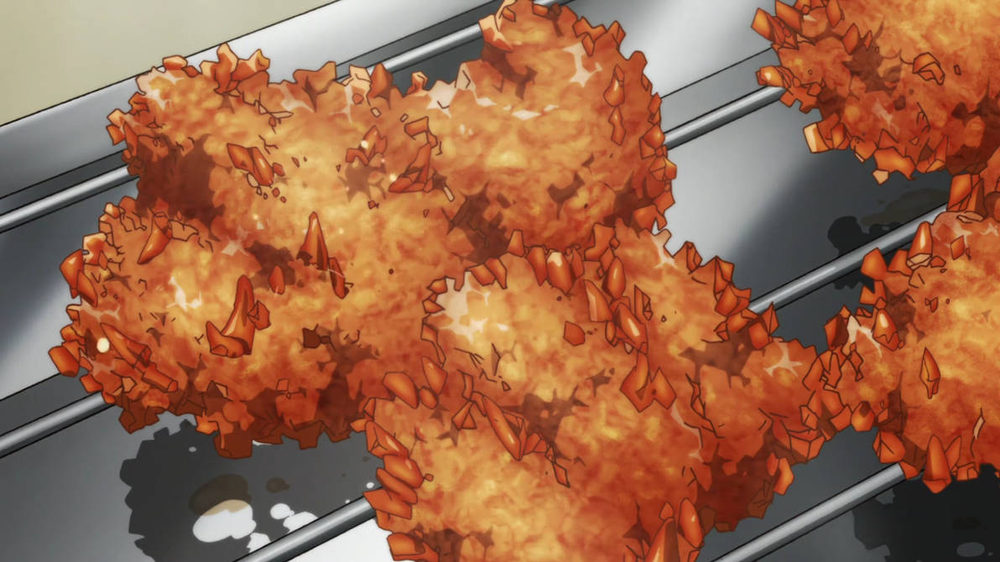

Description:
Korean fried chicken doused in traditional sweet and sour sauce
Ingredients:
Chicken Batter
- Chicken
- 1 cup milk
- 1 cup frying powder
- 1/2 tbsp salt
- 1/3 tbsp pepper
- 1.8L cooking oil
Sweet and sour sauce
- 4/5 cup starch syrup
- 1/3 cup ketchup
- 1/4 cup red pepper paste
- 1/2 cup minced garlic
- 3 tbsp fine red pepper powder
- 3.5 tbsp dark soy sauce
- 1/3 cup brown sugar
Steps:
Directions for chicken
- Rinse the cut chicken thoroughly and drain out water
- Preseason the chicken with salt and pepper
- Soak the preseasoned chicken in milk for 20 minutes
- Add all the ingredients for the sauce in a pan and cook until thickened. Keep stirring
- After 20 minutes, add 1 cup of frying powder to chicken
- Put frying powder to a plastic bag and add the battered chicken and mix
- Add cooking oil to a large coated pan and preheat to 160-170 degrees
- Once the oil is heated, add the battered chicken and deep-fry twice. Drain the oil
- Mix with the sauce
Directions for sauce
- Add starch syrup, ketchup, red pepper paste, dark soy sauce, minced garlic, red pepper powder, and brown sugar to a large pan and mix well
- Over medium heat, cook while stirring
- Once it boils, remove from heat